Tajima Region (但馬地方): Tajima is the name given to the area situated in the north of Hyôgo prefecture. It faces the sea of Japan in the north, and borders on Tottori prefecture in the west and Kyoto prefecture in the east. The area is as vast as the whole area of Tokyo.
Blessed in great nature, Tajima includes two national parks and four prefectural parks. Many mountains, rivers, hot springs, and beautiful beaches… you can find many things in this region.
The Tajima area is divided into 5 zones:
Toyo-oka city / Yabu city / Asago city / Mikata-gun Kami-cho / Mikata-gun Sin-Onsen-cho
Toyo-oka city (豊岡市) is one of the sub-divided zones in the Tajima area, two and a half hours away from Kyoto, Osaka and Kobe, and almost 6 or 7 hours away from Tokyo, by train. You can imagine how much nature we have in this region. The city area stretches widely from the sea of Japan (162.35km2), including many sites seeing spots. The major tourist places are Toyo-oka city (豊岡), Kinosaki Town (城崎), Takeno Town (竹野), Hidaka Town (日高), Izushi Town (出石), and Tantô Town (但東). Each town has its specialty. If you are looking for a place where you can relax in nature, my hometown should be on the list of your next trip.
Toyo-oka Area(豊岡）:
First of all, I want you to know how peaceful the life in Toyo-oka is. It is surrounded by mountains, and the Maruyamagawa River runs through it. I love the area called “Roppo Tango” (Roppo rice field area). There are many kinds of animals and insects living here. My husband and I go for a walk every time we visit Toyo-oka.
{kind=link}
{kind=link}
{kind=link}
{kind=link}
{kind=link}
{kind=link}
{kind=link}
・ Toyooka City Official Website (English)
・Toyo-oka Tourism Association(Japanese)
What are the features of Toyo-oka city?
Toyo-oka has two other names for its specialties. One is “A Town of Bags.” There are many factories and shops dealing in bags in Toyooka. Its history is very long, dating back to the 10th century, when 10 baskets woven out of osiers in Tajima were sent to Shosoin, the treasure repository in Nara. This tradition has been handed down generation after generation, and today it remains as a form of modern fancy bags.
・Museum of bags (the history of bags/Japanese)
Of course we have Toyo-oka brand bags. 100% made in Japan!
・Toyo-oka kaban (bags) official HP
There is also a street called Kaban Street, where several shops specializing in Toyo-oka kaban. Or if you want to see more products, you should visit bag factories, like Kaban no Yakata ( Kaban House). They are always welcoming many tourists.
To prove how much this industry has contributed to this city, I should mention a festival called Yanagi Matsuri (willow festival), which is held every summer, on August 1st and 2nd. On the 2nd there is a fireworks event.
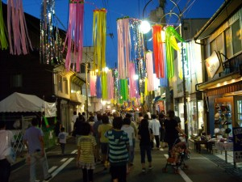
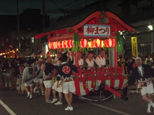
The other name Toyo-oka city has is “A Town of Storks.” Strictly speaking it is an oriental stork (not just a white stork). The bird is registered as a national natural monument and the symbol of Hyogo prefecture. In the past, they were everywhere in Tajima, but due to industrial development, they disappeared in the 1970s.
But today Toyo-oka people are working very hard to bring these birds back to nature once again. They have succeeded in breeding this species artificially, and more and more storks are seen in the sky of Toyo-oka city. I often see a few storks flying and walking around the river and in the rice field. They are very beautiful! To make them prosperous again, Toyo-oka also has to think a lot about the environment. It is considered to be an eco-city. This is why my hometown has been drawing much attention from all over Japan.
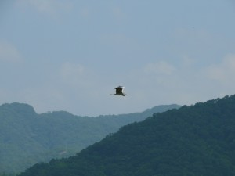
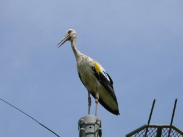
Kô-no-tori no Sato (コウノトリの郷公園/Park of storks) is the place where these storks are taken care of. There is a small museum, and you can learn about the history of Toyo-oka people and these birds. You’ll see many storks are resting here tranquilly.
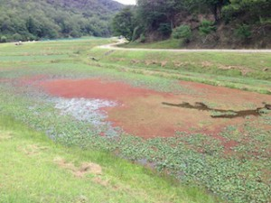
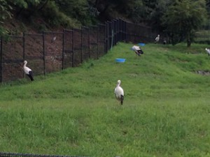
And if you have time, you should visit a souvenir shop, Kô-no-tori Honpô. They sell local original gifts products, and also serve you drinks and light meals. I recommend their cheese cake made from rice flour called “Kônotori rice”.
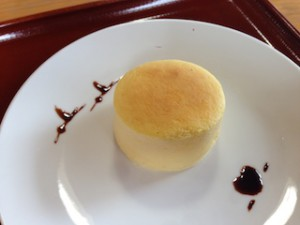
・Park of storks (the history of storks/Japanese)
・Kô-no-tori Honpô ( a souvenir shop and a cafe in the park of storks)
Hidaka Area (日高エリア):
Hidaka (日高町) is known for having many ski grounds called (Kan-nabe kogen ski grounds/神鍋高原スキー場), and its history dates back to the Taisho period (1912-1926). Every winter many ski lovers visit here. But lately people also come to this region to enjoy summer activities, such as paragliders, golf, and tennis. It is busy all around the year today.
My favorite activity here is hiking in the summer. Mt.Kan-nabe (神鍋山) is the mountain formed by the volcanic activity 20,000 years ago, and the molten lava also created valleys.
Ase keikoku (阿瀬渓谷)is one of the examples, as such a valley.
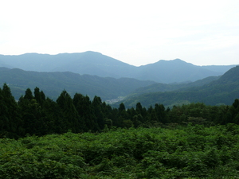
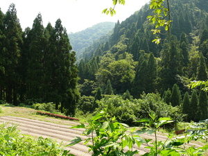
I love walking in the mountain in the summer.
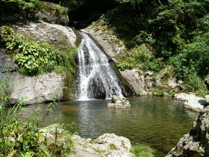
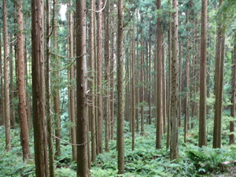
Calm and quiet….
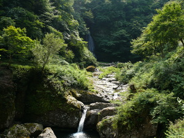
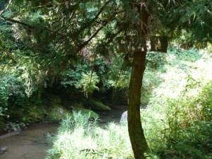
The water is clear and the air is fresh.
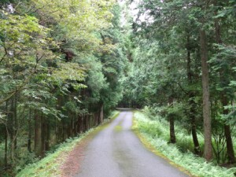
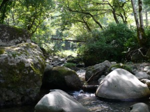
There are several hiking courses.
Kinosaki Area (城崎エリア):
Kinosaki is one of the most famous onsen resort areas in Japan. People are walking in Yukata here, Japanese traditional kimono-like wear for the summer. The landscape is really like a picture. A small river, which runs through the town, is lined with Yanagi (willow) trees. Imagine the view. You will feel like you are traveling through time. Their speciality, fresh seafood, is also served at a ryokan hotel (Japanese-style inns with a hot spring bath). This is a must-go.
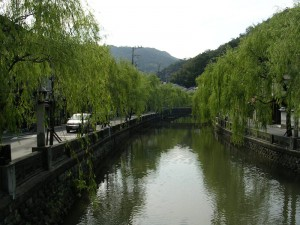
{kind=link}
{kind=link}
{kind=link}
Some hotels are super rich, but some are reasonable. You can find a variety of hotels.
Mikiya ryokan has a long history. They started business in the Edo Period, and it is known for a famous Japanese novelist who wrote “Kinosaki ni-te” (At Kinosaki). He was staying at this hotel. Tsutaya ryokan also has its history. Katsura Kogoro, in the last days of the Tokugawa Shogunate, was hiding in this ryokan (see page for Hagi).
・Mikiya Ryokan (Englsih)
・Tsutaya Ryokan (Japanese)
In the street there are some spots called “Ashi-yu“, where you can put your feet in the onsen water for free! It’s very relaxing. You can also find the source of the hot springs at back of the town.
There are 7 main hot springs called “Soto yu” which are available for all visitors including day trippers (800 yen), and each one has different effects. Check them out at the official site.
・Kinosaki Tourist Association (English)
There’s a cable car going up to the top of the mountain, where you’ll have a panoramic view of Kinosaki Town.
・Kinosaki Cable Car (Japanese)
Genbudo (玄武洞)：
This is a national natural monument. Genbudo is a cave formed in the Genbugan rock (basalt). About 1,600,000 years ago magma erupted and then was cooled down. In this process a mass of Genbugan was formed. Then, due to erosion about 6,000 years ago, this mass was exposed outside. Afterwards people started to exploit the rock and these caves were made. So they are not natural, but actually it’s a site of mining.
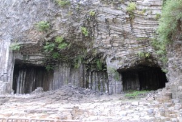
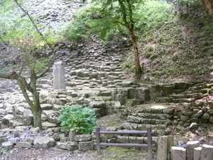
In the past, people used the stone blocks to build the base of the castle. Today you can still find some houses using the same technique in this region. You can get more information at Genbudo Museum (Japanese) .
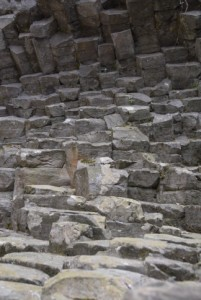
Oh, and a little more drive will take you to a big aquarium, Kinosaki Marine World.
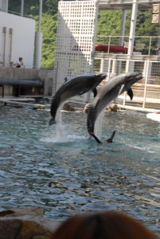
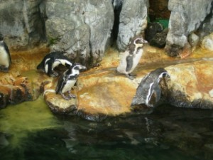
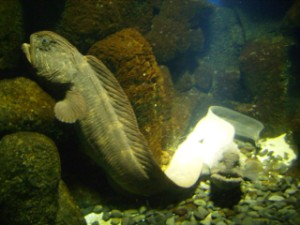
There are also many seafood restaurants in Kinosaki. The one I often visit is Umi no Ie restaurant. They serve nice seafood dishes, and you can also enjoy shopping for some seafood products.
Enjoy Kinosaki!
Izushi Area (出石エリア):
This town is called a small Kyoto because there are many temples, and the landscape reminds you of the old times of Japan. It is like a miniature of Kyoto. You can find the ruin of Izushi castle, and from there you can see a panoramic view of Izushi Town. The specialty of this town is soba (buckwheat noodles). When you visit Izushi, you will be surprised to see so many signs of soba shops.
・Izushi Tourist Association (Japanese)
・Soba Association (Japanese)
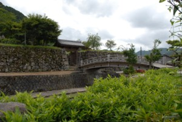
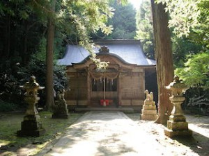
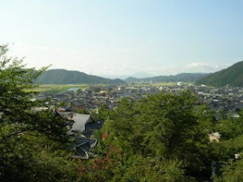
The history of Izushi: In the Muromachi period (1336 – 1467), the Yamana clan was very powerful in the San-in region, where Izushi is, and Yamana Tokiyoshi built Konosumiyama Castle in 1372. The Yamana Family resided at this castle for more than 200 years, but Hashiba Hideyoshi (later Toyotomi Hideyoshi / 1536 – 1598) attacked this castle in 1569. Yamana Suketoyo built another castle, Ariko Castle, at Mt. Ariko, but this one, too, fell to Hideyoshi.
For a while, the castle keepers maintained Ariko Castle, but Koide Yoshimasa became the lord. He was a daimyo in the Warring State period ( the late 15th – the late 16th century) and was also Hideyoshi’s cousin. The Koide clan divided the family in two for the Battle of Sekigahara (the battle between the east squad/Tokugawa and the west squad/Toyotomi). This way they thought the Koide clan would survive, whichever side won. Koide Yoshimasa was on the side of Hideyoshi, and his brother Hideie fought for the east, Tokugawa. The result was the victory on the side of Tokugawa Ieyasu. But thanks to Hideie’s achievement, Yoshimasa’s support for the west squad was not blamed. Their land was also guaranteed.
In 1604 Ariko Castle was abolished by Koide Yoshihide, and Izushi Castle was built. And at this time the castle town was developed.
In 1696, when Koide Fusatsugu died at age three, the family had no more heir. Then Matsudaira Tadachika was sent to take the place of the Koide family. Furthermore, in 1706, when Tadachika was transferred, Sengoku Masaakira came from the Shinano Region, present-time Nagano prefecture, to become the new lord.
The Sengoku clan resided in Izushi until the Abolition of the Han System (feudal domain).
It is said “Izushi soba” was brought from the Shinano Region by the Sengoku clan. And today there are everywhere soba shops in this town!
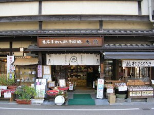
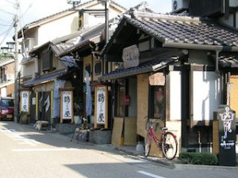
Every time we go back to Japan, we go to eat soba. I recommend some good restaurants we visited (and most likely revisit). Good services and atmosphere. Izushi is also famous for Izushi-yaki (Izushi ware). The soba is served on these Izushi-yaki dishes.
Restaurant Soba-sho
Official site of Soba-sho
{kind=link}
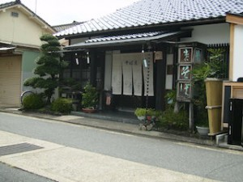
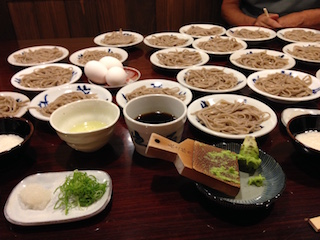
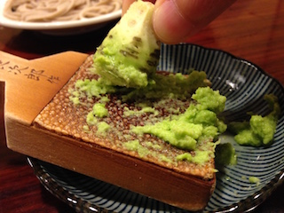
Fresh wasabi !!!
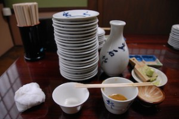
You pile up the dishes like this. If the hight of the pile is longer than the length of your chopsticks, it means you’ve had enough! Ours is always much higher.
Mori-No-Yakata (森の館)
Official site of Mori-No-Yakata
If you want to try soba making, visit “Mori-No-Yakata”! It will be a great experience! After taking a soba workshop, the owner boils the soba and serves it to you in the restaurant situated next to the atelier.
He also gives pottery classes.
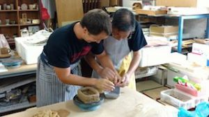
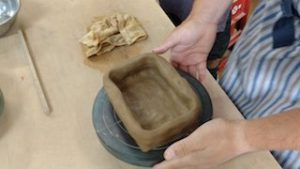
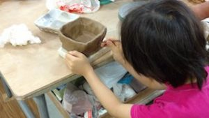
You can create what you like. The master teaches you kindly the basics and the techniques necessary for each step. The lessons are available for all ages. Why don’t you create one as a souvenir gift!
After eating delicious soba, it is time to enjoy shopping!
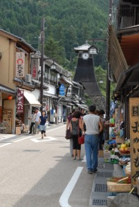
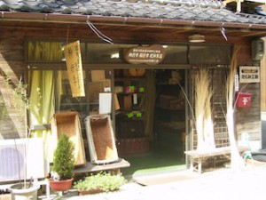
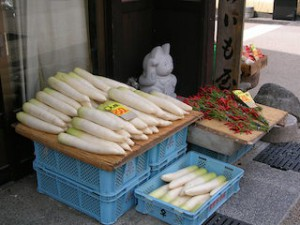
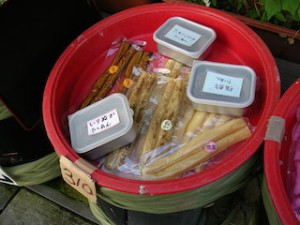
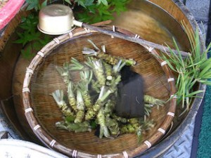
A big clock tower called Shinkoro stands in the center of the town. Originally Izushi people heard a sound of the drums from the tower, which indicated that the lord of the castle was present. The clock was actually added later after some episode.When a doctor in the town became severely sick, many Izuhshi people prayed devotedly for his recovery. When the doctor got well, he wanted to show his gratitude to the people and presented the clock to the town. It was 1881.
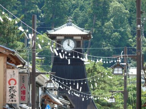
At Izushi sake brewing house, they sell local sake, Sasazuru (114-1 Uoya Izushi Toyo-oka). They say that the color of the sake storehouse changes according to the season.
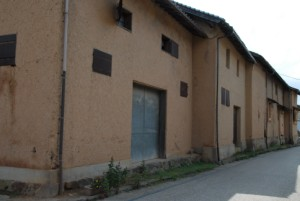
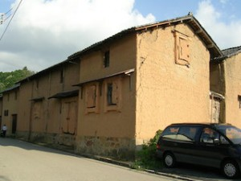
Tajima-no-Sato (但馬の郷) is a unique shop in Izushi. They sell a variety of pork products, such as ham and sausage. They are really delicious. They’ve got a gold award at an international sausage contest! More info at their Homepage.
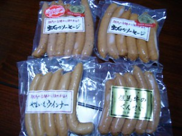
Takeno Area (竹野エリア):
Takeno is located by the sea of Japan. It is known for its beautiful beach. Every summer there are many people enjoying swimming and camping here.
Kaeru Island (Frog Island): Can you see it?
Hasakari Iwa : Hasakari is a Tajima dialect meaning ‘stuck’. A rock ball is stuck in the rock towers.
San-in beach National Park (山陰国立公園) :
Among popular spots, many people like to go to Takeno beach. Takeno village has a lot of nature and is one of the most popular vacation destinations among Japanese people. This area has a nice beach, a camping site, and many other recreation facilities.
{kind=link}
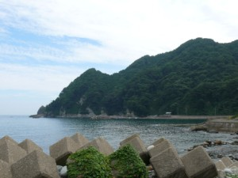
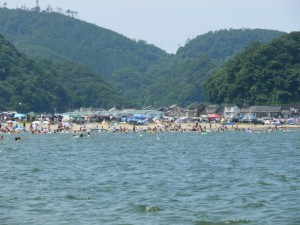
And my recommendation is to stay at Takeno-Kaigan National Park Resort Inn.
National Park Resort Villages (NPRV) is not another chain of resort hotels. Their 36 inns or villages are favorably situated within the territories of National Parks. NPRV is a facility where you can stay longer, get close to vast wilderness and have fun in a variety of recreational activities. NPRV is open to everyone. Why not find a destination of your choice and have a great holiday. NPRV is operated by National Park Resort Villages of Japan, a foundation supported by the Ministry of the Environment.
National Park Resort Villages
(English)
The room rate is reasonable and they have a great view. Here are some photos I took at Takeno Kaigan Notional Park Resort Inn.
The interior of the Inn
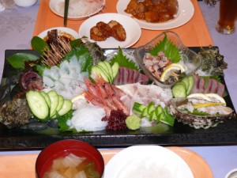
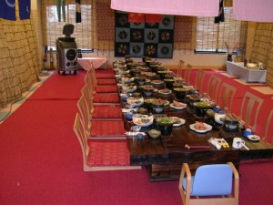
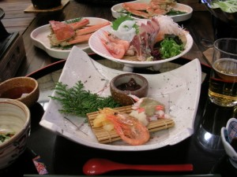
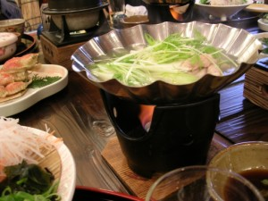
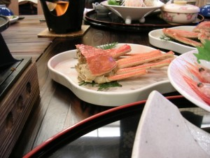
Tokose soba (床瀬そば):
Tokose soba is another good address for you. I really recommend it. They serve not only fresh soba but also a variety of traditional dishes. It’s 100% homemade cuisine using foods in season and local products! They have no tables, no chairs. You sit around “irori” (fireplace)! Really nice atmosphere. The access is a little difficult because the restaurant is located in a really remote area. It really stands in nature. Find this secret soba shop!
Tokose soba (another soba shop recommended / You can see some photos on their HP.)
There are more coming up in the future!!! To be continued.